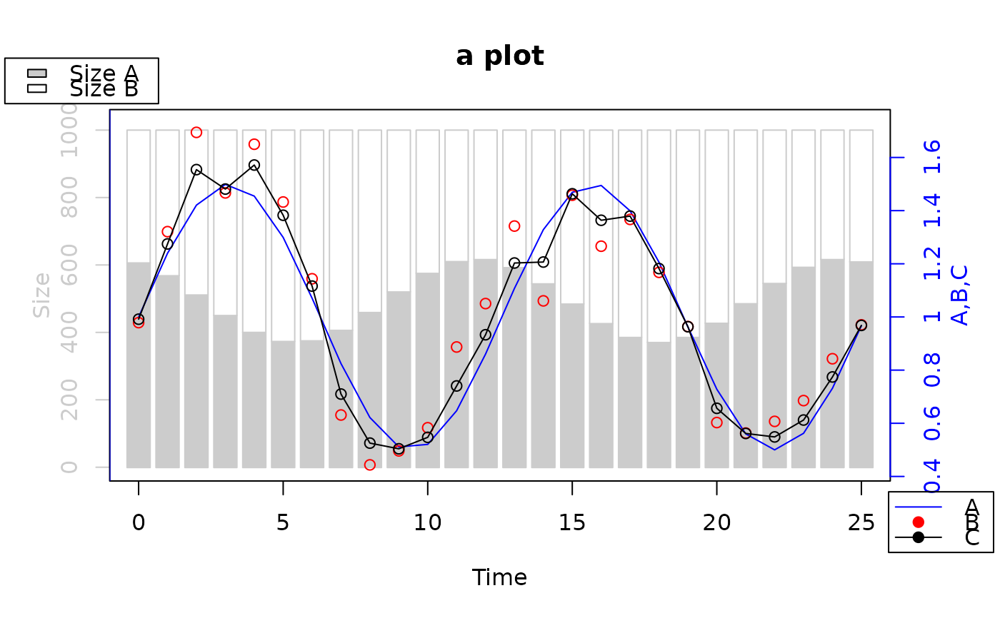
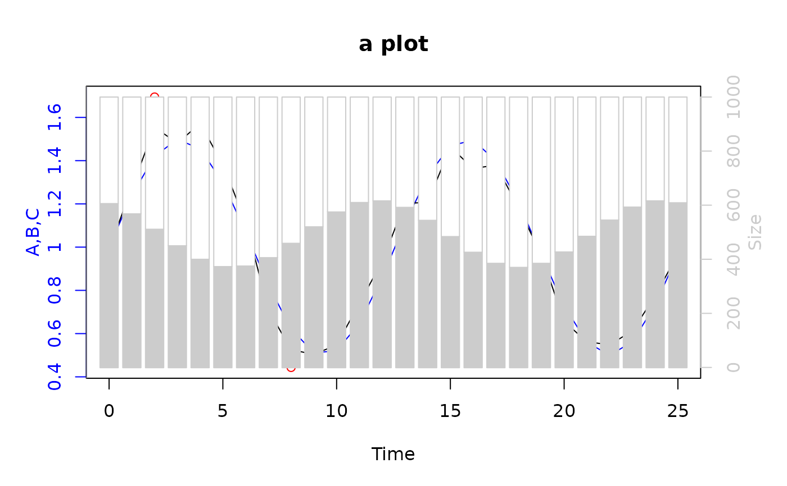

Multiple (stack) plot with two ordinates
twoord.stackplot.RdTwo set of data are plotted on two different ordinate scales.
Usage
twoord.stackplot(lx, rx, ldata, rdata, lcol, rcol, ltype, rtype,
border, rylab, lylab, xlab, ..., incrylim=NULL,
halfwidth=0.4, leftfront=FALSE, mar = c(5, 4, 4, 4))Arguments
- lx,rx
x-values for left/right data.
- ldata,rdata
data on the left/right y-axes.
- lcol, rcol
colors to be used for left/right data.
- ltype, rtype
line types to be used for left/right data, see details.
- border
color for the border of barplot
- rylab,lylab
labels for the left/right y-axes.
- xlab
labels for the x-axis.
- ...
further arguments to be passed to plot.
- incrylim
a number to increase the limits of y-axes.
- halfwidth
half the width of the bars in user units. The bars are centered on successive integers if no x values are supplied
- leftfront
if TRUE, plot the left data on the front layer.
- mar
optional margin adjustment, defaults to c(5,4,4,4).
Details
twoord.stackplot works in the same way as twoord.plot on which it is heavily inspired. The functions let the user plot multiple curve/point or bar plots on the same graph with two different axes. The line type can be one of the following "l" for lines, "p" for points, "b" for both points and line, "o" for overplotted, "bar" for barplot.
Examples
# plot data
#
time <- 0:25
A <- 1+1/2*sin(time/2)
B <- A + rnorm(length(A), sd=1/10)
B <- B + rnorm(length(A), sd=1/10)
sizeA <- floor(450*(1 + 1/4*sin(time/2+2))*(1+.1))
sizeB <- 1000-sizeA
C <- (A*sizeA + B*sizeB)/(sizeA+sizeB)
#typical usage
#
twoord.stackplot(lx=time, rx=time, ldata=cbind(sizeA, sizeB),
rdata=cbind(A, B, C), lcol=c("grey80", "white"),
rcol=c("blue", "red","black"), ltype="bar", rtype=c("l","p","o"),
border="grey80", lylab="Size", rylab="A,B,C", xlab="Time",
main="a plot", incrylim=2/100)
#add a legend
#
par(xpd=TRUE) #extend the area of plotting
par(new=TRUE) #to add new graph "layers"
plot(0:1, 0:1, type="n", xlab="",ylab="", axes=FALSE) #redo the x/y limits
#first legend
legend(-0.18, 1.2, leg=c("Size A", "Size B"), fill=c("grey80", "white"))
#second legend
legend(.97, -0.08, leg=c("A", "B", "C"), col=c("blue", "red","black"),
pch=c(NA, 19, 19), lty=c(1,NA,1))

par(xpd=FALSE, new=FALSE) #default setting
#reverse the order of plotting
twoord.stackplot(lx=time, rx=time, ldata=cbind(sizeA, sizeB),
rdata=cbind(A, B, C), lcol=c("grey80", "white"),
rcol=c("blue", "red","black"), ltype="bar", rtype=c("l","p","o"),
border="grey80", lylab="Size", rylab="A,B,C", xlab="Time",
main="a plot", incrylim=2/100, leftfront=TRUE)
